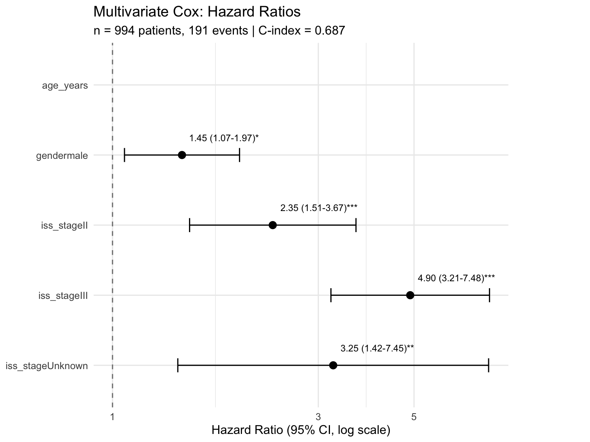

Overview
See the Glossary for term definitions used throughout this project.
Survival analysis of the CoMMpass cohort stratified by clinical and cytogenetic features
Kaplan-Meier curves with log-rank tests for group comparisonsCox proportional hazards models for multivariate analysisForest plots of hazard ratios with 95% confidence intervals
Note: This vignette was built in CI with sample_limit=20. Local builds default to 200 samples. Numbers below reflect the CI subset.
Overall Survival
Kaplan-Meier estimate of the overall survival function for the full patient cohort.
Median overall survival has not been reached in this cohort (n = 994 patients). This indicates that more than 50% of patients remain alive at last follow-up, which is consistent with improving outcomes in multiple myeloma with modern therapies.
Survival by ISS Stage
ISS stratifies by serum albumin and beta-2 microglobulinISS III is expected to have worse survival than ISS I
See the EDA vignette for ISS stage distributions
Survival by Cytogenetic Risk Group
Cytogenetic risk per IMWG 2014 criteria : high-risk = t(4;14) OR t(14;16) OR del(17p); standard-risk = all others.
Data not available: Target
vig_km_risk returned NULL. See
Data Sources .
Survival by Individual Cytogenetic Markers
Each marker is analyzed separately: patients with vs without the alteration.
Data not available: Target
vig_km_markers returned NULL. See
Data Sources .
Cox Proportional Hazards
Basic Model: Age + Gender
Hazard ratios for age and gender from a minimal Cox PH model.
{ if (is.null(cox_basic) || is.null(cox_basic\(hazard_ratios))
return(NULL)
hr <- cox_basic\) hazard_ratios for (col in names(hr)) { if (is.numeric(hr[[col]])) { hr[[col]] <- if (col == “p.value”) signif(hr[[col]], 4) else round(hr[[col]], 3) } } caption <- paste0(“Cox PH model: age + gender.”, “term = covariate name.”, “HR (hazard ratio) > 1 = increased hazard (worse survival).”, “CI = 95% confidence interval for HR.”, “p.value = Wald test significance.”, “n =”, cox_basic\(n, " patients, ", cox_basic\) n_events, ” events. C-index = “, round(cox_basic\(concordance, 3),
". ", "* p < 0.05, ** p < 0.01, *** p < 0.001.")
DT::datatable(hr, rownames = FALSE, filter = "top", options = list(pageLength = 15,
scrollX = TRUE), caption = htmltools::tags\) caption(style =”caption-side: top; text-align: left;“, caption)) }
Generating code
{
if (is.null(cox_basic) || is.null(cox_basic$hazard_ratios))
return(NULL)
hr <- cox_basic$hazard_ratios
for (col in names(hr)) {
if (is.numeric(hr[[col]])) {
hr[[col]] <- if (col == "p.value")
signif(hr[[col]], 4)
else round(hr[[col]], 3)
}
}
caption <- paste0("Cox PH model: age + gender. ", "term = covariate name. ",
"HR (hazard ratio) > 1 = increased hazard (worse survival). ",
"CI = 95% confidence interval for HR. ", "p.value = Wald test significance. ",
"n = ", cox_basic$n, " patients, ", cox_basic$n_events,
" events. C-index = ", round(cox_basic$concordance, 3),
". ", "* p < 0.05, ** p < 0.01, *** p < 0.001.")
DT::datatable(hr, rownames = FALSE, filter = "top", options = list(pageLength = 15,
scrollX = TRUE), caption = htmltools::tags$caption(style = "caption-side: top; text-align: left;",
caption))
}
Full Model: Age + Gender + ISS + Cytogenetic Risk
Multivariable Cox model adjusting for ISS stage and IMWG cytogenetic risk classification.
{ if (is.null(cox_full) || is.null(cox_full\(hazard_ratios))
return(NULL)
hr <- cox_full\) hazard_ratios for (col in names(hr)) { if (is.numeric(hr[[col]])) { hr[[col]] <- if (col == “p.value”) signif(hr[[col]], 4) else round(hr[[col]], 3) } } caption <- paste0(“Multivariate Cox PH model with clinical and cytogenetic covariates.”, “term = covariate name.”, “HR > 1 = increased hazard (worse survival).”, “CI = 95% confidence interval.”, “n =”, cox_full\(n,
" patients, ", cox_full\) n_events, ” events. “,”C-index = “, round(cox_full\(concordance, 3), ". ", "Covariates: ",
paste(cox_full\) covariates_used, collapse =”, “),”.”) DT::datatable(hr, rownames = FALSE, filter = “top”, options = list(pageLength = 15, scrollX = TRUE), caption = htmltools::tags\(caption(style = "caption-side: top; text-align: left;",
caption))
}
<details><summary>Generating code</summary>
<pre><code class="language-r">{
if (is.null(cox_full) || is.null(cox_full\) hazard_ratios)) return(NULL) hr <- cox_full\(hazard_ratios
for (col in names(hr)) {
if (is.numeric(hr[[col]])) {
hr[[col]] <- if (col == "p.value")
signif(hr[[col]], 4)
else round(hr[[col]], 3)
}
}
caption <- paste0("Multivariate Cox PH model with clinical and cytogenetic covariates. ",
"term = covariate name. ", "HR > 1 = increased hazard (worse survival). ",
"CI = 95% confidence interval. ", "n = ", cox_full\) n, ” patients, “, cox_full\(n_events, " events. ", "C-index = ",
round(cox_full\) concordance, 3),”. “,”Covariates: “, paste(cox_full\(covariates_used, collapse = ", "), ".")
DT::datatable(hr, rownames = FALSE, filter = "top", options = list(pageLength = 15,
scrollX = TRUE), caption = htmltools::tags\) caption(style =”caption-side: top; text-align: left;“, caption)) }
Forest Plot
Forest plot showing hazard ratios from the full multivariate Cox regression. Each row represents a covariate; the point estimate is the HR with 95% CI bars. HR > 1 indicates increased risk; HR < 1 indicates a protective effect. The dashed vertical line marks HR = 1 (no effect).

Proportional Hazards Assumption
Schoenfeld residuals test for the proportional hazards assumption. A significant p-value (< 0.05) suggests the covariate’s effect changes over time, violating the PH assumption. Covariates that fail this test may need time-varying coefficients or stratification.
{ cox_for_ph <- if (!is.null(cox_full)) cox_full else cox_basic if (is.null(cox_for_ph) || is.null(cox_for_ph\(ph_test))
return(NULL)
ph <- cox_for_ph\) ph_test ph_table <- as.data.frame(ph\(table)
ph_table\) variable <- rownames(ph_table) ph_table <- ph_table[, c(“variable”, “chisq”, “p”)] names(ph_table) <- c(“Variable”, “Chi-squared”, “p-value”) ph_table\(`Chi-squared` <- round(ph_table\) Chi-squared, 2) ph_table\(`p-value` <- signif(ph_table\) p-value, 4) caption <- paste0(“Proportional hazards assumption test (cox.zph).”, “Variable = covariate tested.”, “Chi-squared = Schoenfeld residual test statistic.”, “p-value < 0.05 indicates the PH assumption may be violated”, “(hazard ratio changes over time).”, “If violated, time-varying coefficients or stratification”, “should be considered.”) DT::datatable(ph_table, rownames = FALSE, filter = “top”, options = list(pageLength = 15, scrollX = TRUE), caption = htmltools::tags\(caption(style = "caption-side: top; text-align: left;",
caption))
}
<details><summary>Generating code</summary>
<pre><code class="language-r">{
cox_for_ph <- if (!is.null(cox_full))
cox_full
else cox_basic
if (is.null(cox_for_ph) || is.null(cox_for_ph\) ph_test)) return(NULL) ph <- cox_for_ph\(ph_test
ph_table <- as.data.frame(ph\) table) ph_table\(variable <- rownames(ph_table)
ph_table <- ph_table[, c("variable", "chisq", "p")]
names(ph_table) <- c("Variable", "Chi-squared", "p-value")
ph_table\) Chi-squared <- round(ph_table\(`Chi-squared`, 2)
ph_table\) p-value <- signif(ph_table\(`p-value`, 4)
caption <- paste0("Proportional hazards assumption test (cox.zph). ",
"Variable = covariate tested. ", "Chi-squared = Schoenfeld residual test statistic. ",
"p-value < 0.05 indicates the PH assumption may be violated ",
"(hazard ratio changes over time). ", "If violated, time-varying coefficients or stratification ",
"should be considered.")
DT::datatable(ph_table, rownames = FALSE, filter = "top",
options = list(pageLength = 15, scrollX = TRUE), caption = htmltools::tags\) caption(style = “caption-side: top; text-align: left;”, caption)) }
Model Comparison
Comparison of nested Cox models using likelihood ratio test, AIC, and concordance index. The full model includes ISS stage and cytogenetic risk in addition to age and gender. A significant likelihood ratio test indicates the additional covariates improve model fit.
{ if (is.null(cox_basic) || is.null(cox_full)) return(NULL) if (is.null(cox_basic\(concordance) || is.null(cox_full\) concordance)) return(NULL) comp <- data.frame(Model = c(“Basic (age + gender)”, paste0(“Full (”, paste(cox_full\(covariates_used, collapse = " + "), ")")),
N = c(cox_basic\) n, cox_full\(n), Events = c(cox_basic\) n_events, cox_full\(n_events), C_index = c(round(cox_basic\) concordance, 3), round(cox_full\(concordance, 3)), stringsAsFactors = FALSE)
caption <- paste0("Cox model comparison. ", "Model = covariates included. ",
"N = patients with complete data for all covariates. ",
"Events = observed deaths. ", "C-index = concordance statistic ",
"(0.5 = random, 1.0 = perfect discrimination). ", "Higher C-index indicates better prognostic discrimination.")
DT::datatable(comp, rownames = FALSE, filter = "top", options = list(pageLength = 10,
scrollX = TRUE), colnames = c("Model", "N", "Events",
"C-index"), caption = htmltools::tags\) caption(style = “caption-side: top; text-align: left;”, caption)) }
Generating code
{
if (is.null(cox_basic) || is.null(cox_full))
return(NULL)
if (is.null(cox_basic$concordance) || is.null(cox_full$concordance))
return(NULL)
comp <- data.frame(Model = c("Basic (age + gender)", paste0("Full (",
paste(cox_full$covariates_used, collapse = " + "), ")")),
N = c(cox_basic$n, cox_full$n), Events = c(cox_basic$n_events,
cox_full$n_events), C_index = c(round(cox_basic$concordance,
3), round(cox_full$concordance, 3)), stringsAsFactors = FALSE)
caption <- paste0("Cox model comparison. ", "Model = covariates included. ",
"N = patients with complete data for all covariates. ",
"Events = observed deaths. ", "C-index = concordance statistic ",
"(0.5 = random, 1.0 = perfect discrimination). ", "Higher C-index indicates better prognostic discrimination.")
DT::datatable(comp, rownames = FALSE, filter = "top", options = list(pageLength = 10,
scrollX = TRUE), colnames = c("Model", "N", "Events",
"C-index"), caption = htmltools::tags$caption(style = "caption-side: top; text-align: left;",
caption))
}
Survival by Gene Expression
Patients are split at the median VST expression of each top DE gene into “High” and “Low” groups. This connects differential expression results to clinical outcomes.
Note on multiple testing: With 5 genes tested, a Bonferroni-corrected significance threshold is p < 0.01.
Expression by Cytogenetic Subtype
Violin/box plots showing gene expression (VST) stratified by cytogenetic marker status. This reveals whether specific alterations drive expression changes in top DE genes.
Show code
<- safe_tar_read ("vig_expr_by_subtype" )if (is.list (plots) && ! inherits (plots, c ("gtable" , "grob" ))) {for (p in plots) {if (inherits (p, c ("gtable" , "grob" , "gTree" ))) {:: grid.newpage (); grid:: grid.draw (p)else print (p)
Next Steps
Time-varying coefficients : For covariates violating the PH assumption.Cure models : If a plateau is observed in KM curves, consider mixture cure models.See the cytogenetic landscape for alteration frequencies underlying risk groups.
See the DE results for gene signatures that could inform survival stratification.
Data Sources
Results in this vignette are derived from the MMRF CoMMpass study (MMRF-COMMPASS, ~1,143 patients), downloaded via TCGAbiolinks . The pipeline runs with a configurable sample_limit (default 200; CI uses 20).
For full citations, data access tiers, and the distinction between pipeline data and synthetic test data, see the Data Sources vignette.
Recent Changes
Recent project commits with lines added, files changed, and change categories.
Bayesian Survival Models
Bayesian Cox PH models fit with brms using weakly informative priors. These complement the frequentist models above by providing posterior distributions, credible intervals, and natural hierarchical structure (e.g., ISS-stage random intercepts).
Bayesian models use cue = "never" — they only run when explicitly requested via tar_make(names = bayes_cox_basic). MCMC compilation takes several minutes.
Frequentist vs Bayesian Comparison
Reproducibility
Session Info (click to expand)
Show code
sessionInfo ()#> R version 4.5.2 (2025-10-31) #> Platform: aarch64-apple-darwin25.2.0 #> Running under: macOS Tahoe 26.3.1 #> #> Matrix products: default #> BLAS: /nix/store/ab8sq4g14lg45192ykfqcklgw6fvaswh-blas-3/lib/libblas.dylib #> LAPACK: /nix/store/ssl6kfm7w37gz5pn57jn2x7xzw3bss24-openblas-0.3.30/lib/libopenblasp-r0.3.30.dylib; LAPACK version 3.12.0 #> #> locale: #> [1] en_US.UTF-8/en_US.UTF-8/en_US.UTF-8/C/en_US.UTF-8/en_US.UTF-8 #> #> time zone: UTC #> tzcode source: internal #> #> attached base packages: #> [1] stats graphics grDevices utils datasets methods base #> #> other attached packages: #> [1] targets_1.11.4 #> #> loaded via a namespace (and not attached): #> [1] base64url_1.4 gtable_0.3.6 jsonlite_2.0.0 #> [4] dplyr_1.1.4 compiler_4.5.2 tidyselect_1.2.1 #> [7] callr_3.7.6 scales_1.4.0 yaml_2.3.12 #> [10] fastmap_1.2.0 ggplot2_4.0.1 R6_2.6.1 #> [13] generics_0.1.4 igraph_2.2.1 knitr_1.51 #> [16] htmlwidgets_1.6.4 backports_1.5.0 tibble_3.3.1 #> [19] pillar_1.11.1 RColorBrewer_1.1-3 rlang_1.1.7 #> [22] DT_0.34.0 xfun_0.56 S7_0.2.1 #> [25] otel_0.2.0 cli_3.6.5 withr_3.0.2 #> [28] magrittr_2.0.4 ps_1.9.1 digest_0.6.39 #> [31] grid_4.5.2 processx_3.8.6 secretbase_1.1.1 #> [34] lifecycle_1.0.5 prettyunits_1.2.0 vctrs_0.7.1 #> [37] evaluate_1.0.5 glue_1.8.0 data.table_1.18.2.1 #> [40] farver_2.1.2 codetools_0.2-20 rmarkdown_2.30 #> [43] tools_4.5.2 pkgconfig_2.0.3 htmltools_0.5.9